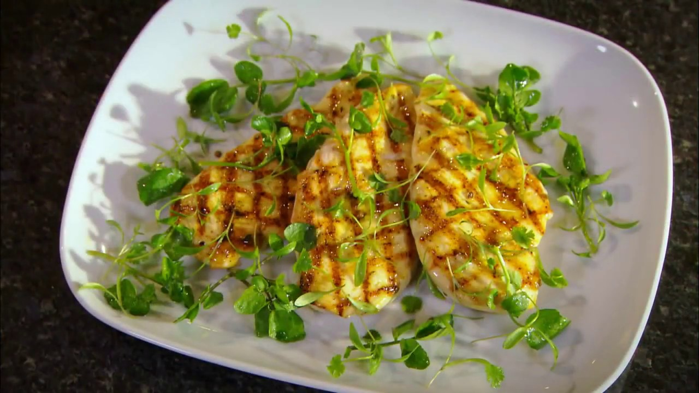

Go back to Homepage
Curried Chicken with Watercress

Ingredients
- 1 Chicken Stock Cube
- 2 tsp Olive oil
- 2 tsp Rosemary, finely chopped
- 4 Skinless chicken breast fillets
- 1 Handful of watercress sprigs
- 1 Squeeze of lemon juice
- 1.5 tsp Curry powder
Instructions
- Pre-heat one large, heavy griddle pan until very hot. The secret to successful griddling is to make the pan REALLY hot.
- While the pan is pre-heating, make the seasoning paste.
- Crumble the Knorr Chicken Stock Cube into a small bowl and mix with 2tsps of olive oil to make a paste. Add the curry powder and chopped rosemary and mix in well.
- Spread half of the paste evenly over the top of each chicken breast fillet to season it. The great thing about using a paste is that you can spread it evenly and it stays in place.
- ace the chicken breast fillets on the pre-heated griddle pan, paste side-down and cook for 4-5 minutes.
- As they cook, carefully spread the remaining paste over the unseasoned side of each of the chicken breast fillets before turning over and cooking for 4-5 more minutes.
- When the chicken is almost cooked through, turn off the direct heat below the griddle pan and allow the residual heat in the pan to carry on cooking the chicken breasts. If your griddle is not heavy enough to retain sufficient heat, simply reduce the heat and complete the cooking over a low heat. Pour a little olive oil over the chicken and cook through for around 1-2 minutes, turning the chicken over once or twice to ensure even cooking.
- Check the chicken is cooked through, then transfer to a serving platter.
- Garnish with coriander sprigs. Sprinkle with a squeeze of lemon juice and a little olive oil and serve at once.